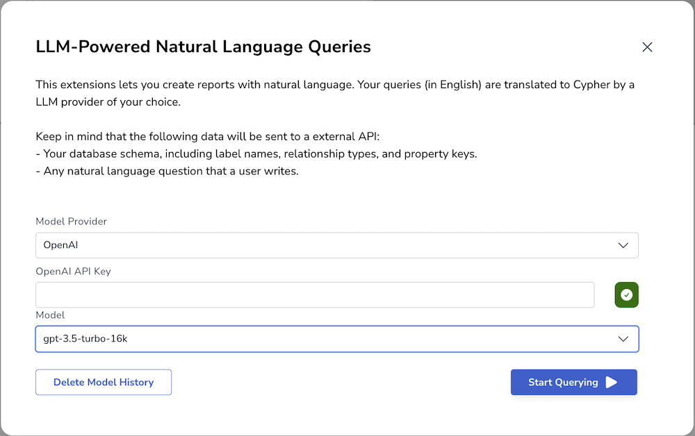
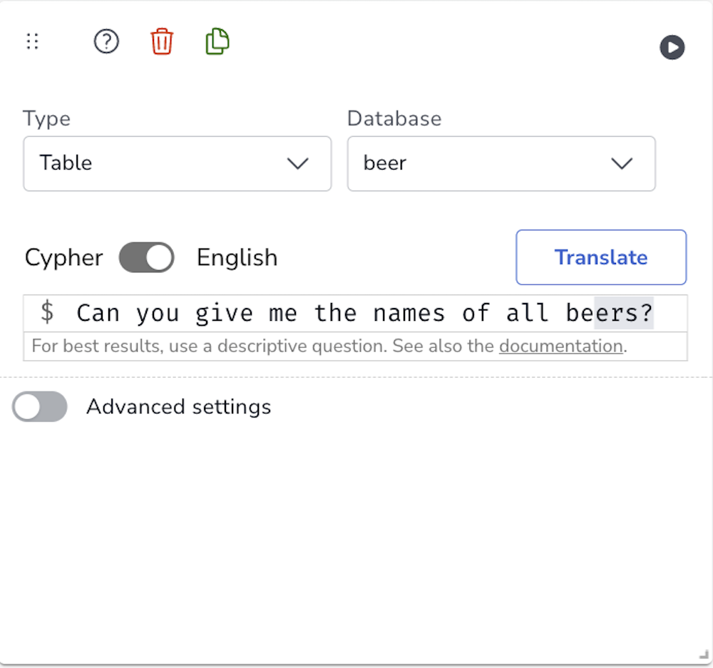
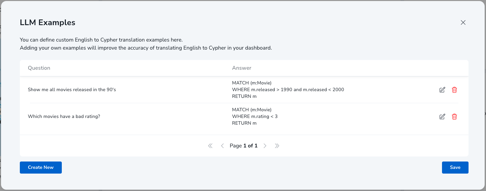

Text2Cypher - Natural Language Queries
|
This documentation pertains to the (legacy) unsupported version of NeoDash. For users of the supported NeoDash offering, refer to NeoDash commercial. |
Use natural language to generate Cypher queries in NeoDash. Connect to an LLM through an API, and let NeoDash use your database schema + the report types to generate queries automatically.
How it works
This extension feature allows users to interact with NeoDash using natural language to generate Cypher queries for querying Neo4j graph databases. This integration leverages Language Models (LLMs) to interpret user inputs and generate Cypher queries based on the provided schema definition.
Configuration
To enable Natural Language Queries in NeoDash, follow these configuration steps:
-
Open NeoDash and navigate to the "Extensions" section in the left sidebar.
-
Locate the "Text2Cypher" extension and click on it to activate it.
-
Once activated, a new button will appear on top of the screen, with a red exclamation mark (⚠️). Click this button.
-
In the configuration window, you will be prompted to provide the necessary information to connect to the Language Model (LLM). Enter the model provider, API key, deployment url if needed by the model provider, and select the desired model to use.
-
After providing the required information, click on the "Start Querying" button to finalize the configuration.

Usage
Once the extension is configured, you can start using it in your NeoDash reports. Here’s how:
-
Open the Report settings for the desired report.
-
In the report settings, you will find a toggle switch located above the editor. This switch allows you to toggle between Cypher and English languages.
-
Since you have enabled the extension and authenticated by providing your API key, you can switch to the English language mode.
-
Start formulating your queries in plain English, using natural language expressions to describe the data you want to retrieve.
-
After composing your query, you have two options for further actions:
-
Translate: By clicking the "Translate" button, your query will be translated into Cypher using the Language Model. The translated Cypher query will be displayed in the editor when you toggle to the Cypher view. This allows you to review and modify the generated Cypher query before execution.
-
Run: If you wish to directly execute the query and view the results, click the "Run" button in the top right corner. The execution of the query will depend on the selected report type, and the results will be displayed accordingly.
-

Improving Accuracy with Custom Prompting
To boost the accuracy of the language model, you can provide your own example queries to be fed into the prompt. Specifying queries specific to your data model & use-cases can significantly improve the quality of Text2Cypher translations.
To access the model examples screen, open up the settings for the extensions. After specifying the provider and model, click the "Tweak Prompts" button on the bottom-left of the window. This leads you to the example interface:

In this interface, you can specify one or more examples that are sent to the language model. An example consists of both a Cypher query, and a natural language equivalent of that query. You can create as many examples as you want, but keeping them close to your user queries will yield best results.
Underlying Functionality
-
Retrieve the Schema: The system prompts at the beginning of the interaction to retrieve the database schema. This ensures that the generated queries adhere to the provided schema and available relationship types and properties.
-
Prompting in English: Once the schema is retrieved, you can start prompting your queries in plain English. NeoDash, powered by the LLM, will interpret your English query and generate the corresponding Cypher query based on the provided schema.
-
Automatic Query Generation: NeoDash automatically generates the Cypher queries for you, taking into account the report type you specified. Whether it’s a table, graph, bar chart, line chart, or any other supported report type, the generated queries will retrieve the necessary data based on the report requirements.
-
Retry Logic: To enhance the reliability of the generated queries, we have implemented retry logic. If there is any issue or error during the query generation process, the system will attempt to retry three times as a maximum and provide a valid query to ensure smooth query execution.
Prompting Tips
When using Natural Language Queries in NeoDash, keep the following tips in mind to enhance your experience:
-
Be clear and specific in your queries: Provide detailed descriptions of the data you want to retrieve, including node labels, relationship types, and property values.
-
Use keywords and phrases: Incorporate relevant keywords and phrases that are commonly used in the context of your data to improve query accuracy.
-
Ask precise questions: Frame your queries as questions to obtain specific information. For example, instead of "Show me all customers," try "Which customers have made a purchase in the last month?"
-
Experiment with different phrasings: If you’re not getting the desired results, try rephrasing your query using synonyms or alternative expressions.
-
Avoid ambiguous queries: Ambiguous or vague queries may yield unexpected results. Make sure to provide sufficient context and clarify any ambiguities.
-
Validate and review generated queries: Always review the generated Cypher queries to ensure they accurately represent your intent and produce the expected results.
Important Considerations
When using Natural Language Queries with Language Models, it’s important to be aware of the following considerations:
-
Multiple model providers: Depending on your configuration, your queries may be processed by different model providers. Take into account that this means your data is being sent to different providers.
-
Non-deterministic nature: Language Models can produce non-deterministic outputs. The generated queries may vary between different runs, even with the same input prompt. Validate the generated queries and perform thorough testing to ensure correctness.
-
Potential hallucination: Language Models can generate outputs that may not align with the specific schema or data constraints. Exercise caution and verify the results to prevent potential inaccuracies or hallucinations.